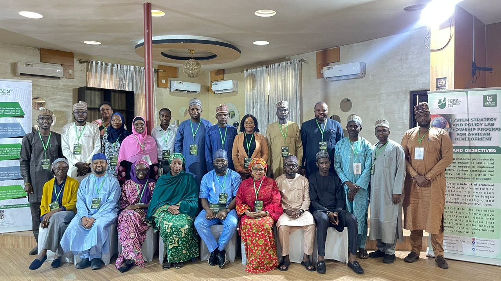
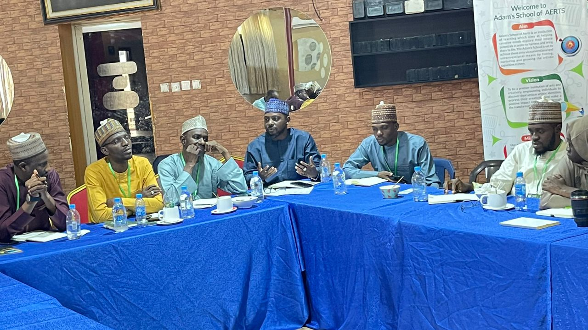
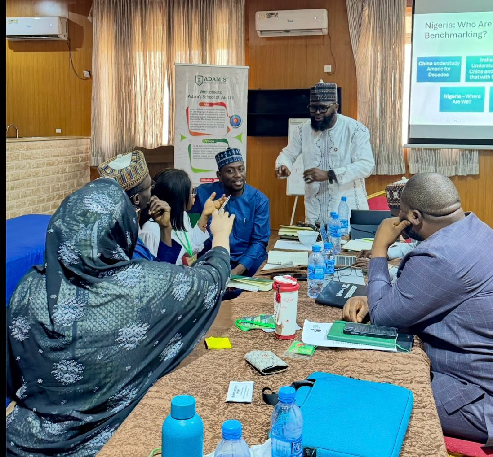
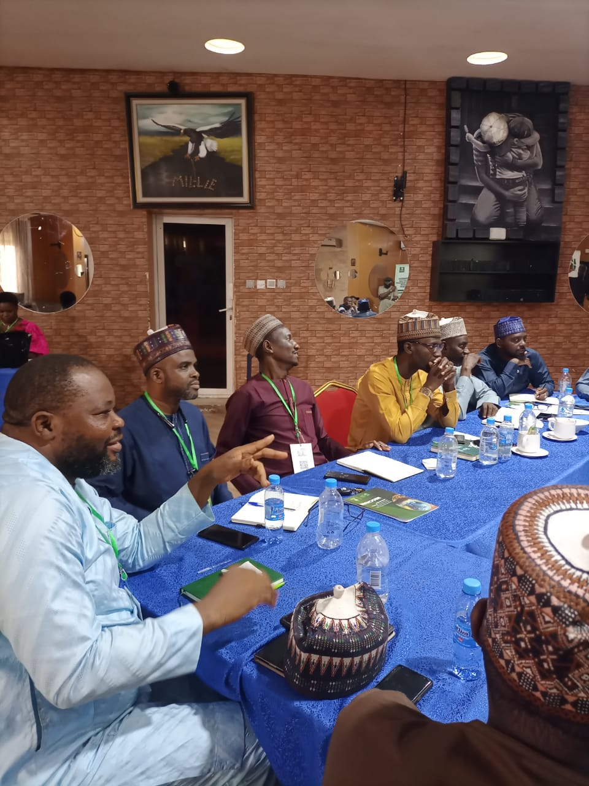
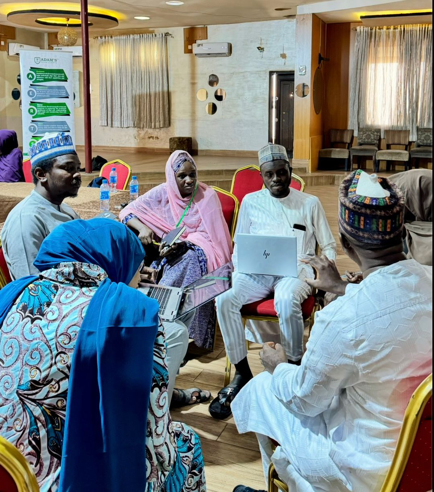

Our Programs
Four interconnected pillars of governance, policy research, and strategic leadership — from research labs to the halls of government.
Research & Policy Analysis
Our flagship research programme produces rigorous, evidence-based policy analysis and strategic briefs that inform governance reform at state and national levels. We work with policymakers, academics, and practitioners to translate research into actionable recommendations.
Who it Serves: Government ministries, legislators, NGOs, and development organisations across Nigeria.
- ✓Thematic policy briefs on governance, security, and development
- ✓Stakeholder research consultations and field assessments
- ✓Evidence synthesis and comparative policy analysis
- ✓Expected Outcome: Policy adoption and governance reform informed by independent, credible research

Professional Training & Fellowship
Structured capacity-building programmes that equip emerging and mid-career leaders with the strategic, ethical, and analytical skills needed to drive institutional reform and public service excellence.
Action Focus: Strategic thinking, ethical leadership, public policy design, and institutional management.
- ✓Cohort-based executive leadership training programmes
- ✓Mentorship by senior policymakers and governance experts
- ✓Peer learning networks and alumni engagement
- ✓Impact: Graduates lead institutional reform and represent Nigeria in regional governance forums

Advisory & Consulting Services
Providing expert strategic counsel and actionable insights for governments, institutions, and organizations to navigate complex policy challenges and implement dynamic structural changes.
Key Services: Strategic planning, organizational assessment, policy design, and program evaluation.
- ✓Customized strategy formulation for public and private entities
- ✓Impact assessments and policy audits
- ✓Structural reform roadmap development
- ✓Outcome: Resilient organizational strategies driving transformational growth

Conferences & Policy Dialogues
Facilitating high-level policy dialogues and conferences that assemble key stakeholders to debate, formulate, and align on strategic development priorities.
Focus: Setting agendas, fostering cross-sector coalitions, and driving public narrative on core governance issues.
- ✓Annual strategic governance summits and town halls
- ✓Roundtable forums with international experts
- ✓Public awareness and civic engagement platforms
- ✓Impact: Establishing strong consensus on nationwide governance policies

Project Implementation
Executing targeted, on-the-ground interventions that translate policy recommendations from blueprints into measurable, real-world development outcomes.
Action Areas: Civic tech developments, pilot governance programs, and community empowerment.
- ✓Direct management of pilot policy initiatives
- ✓Field-level monitoring, evaluation, and learning systems
- ✓Deployment of civic technology for inclusive tracking
- ✓Outcome: Tangible societal impact driven by data-backed interventions

Partnerships & Collaboration
Building strong coalitions with international organizations, private sector partners, and civil society to scale innovative solutions and maximize governance outcomes.
Activities: MOU signings, joint research initiatives, co-hosted forums, and cross-sector working groups.
- ✓Government-civil society partnership brokering
- ✓International donor and development agency engagement
- ✓Cross-sector working groups on priority reform areas
- ✓Impact: Scalable, co-owned solutions that outlast any single organization
Support Policy Innovation
Your funding or partnership can help expand our research and strategic governance programs across Africa.